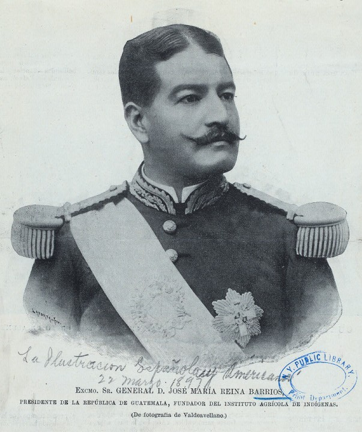
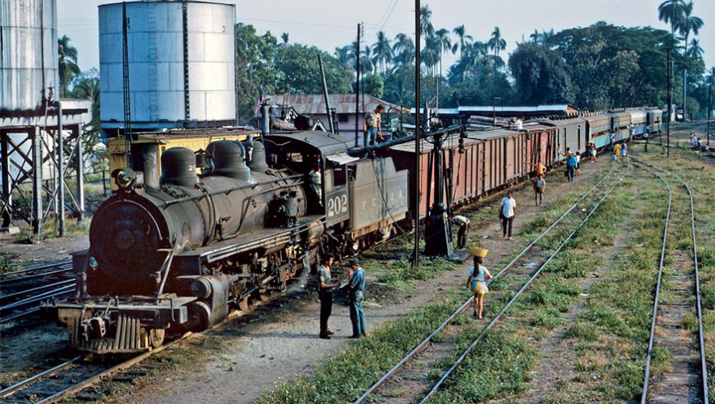
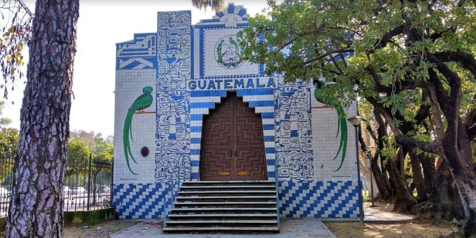
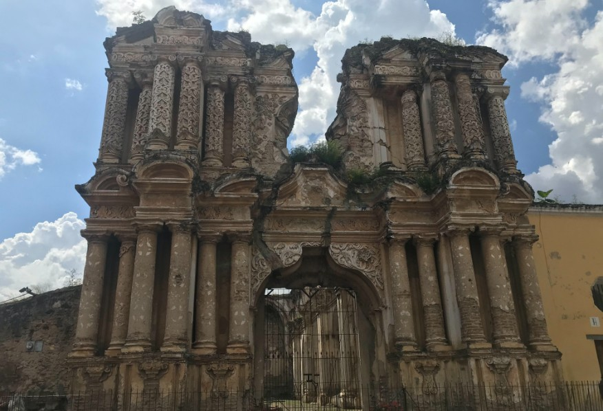

Un acontecimiento histórico que buscó mostrar al mundo el progreso, la modernización y el potencial económico de Guatemala.
La Exposición Centroamericana fue una exposición internacional celebrada en la Ciudad de Guatemala en 1897 durante el gobierno del presidente José María Reina Barrios. El evento fue concebido con el propósito de mostrar al mundo los avances económicos, industriales, agrícolas y culturales alcanzados por Guatemala a finales del siglo XIX.
La exposición buscaba atraer inversionistas extranjeros y promover el comercio regional. Además, pretendía demostrar el potencial de Guatemala como un centro de desarrollo y modernización en Centroamérica.
Este acontecimiento se inspiró en las grandes exposiciones universales que se realizaban en Europa y América, donde los países participantes exhibían sus logros científicos, tecnológicos y culturales.
Las exposiciones universales fueron eventos internacionales organizados para mostrar los avances tecnológicos, industriales, científicos y culturales de diferentes países. Durante el siglo XIX estas exposiciones se convirtieron en símbolos del progreso y la modernización.
Uno de los ejemplos más importantes fue la Exposición Universal de París de 1889, famosa por la inauguración de la Torre Eiffel. Estos eventos inspiraron a varios gobiernos latinoamericanos a organizar exposiciones similares para promover el desarrollo económico de sus naciones.
En Guatemala, el presidente José María Reina Barrios impulsó la Exposición Centroamericana como parte de un ambicioso proyecto de modernización que incluía la construcción del Ferrocarril del Norte, nuevas avenidas, edificios públicos y mejoras urbanas.
José María Reina Barrios asume la presidencia de Guatemala.
Comienzan los preparativos para la Exposición Centroamericana.
Se construyen pabellones, edificios y espacios destinados a la exposición.
Inauguración oficial de la Exposición Centroamericana.
La caída internacional del precio del café provoca dificultades económicas para Guatemala.
El país enfrenta una crisis económica y política tras los ambiciosos proyectos gubernamentales.

Fue presidente de Guatemala entre 1892 y 1898. Durante su gobierno impulsó importantes proyectos de infraestructura y modernización nacional.
Su objetivo era convertir a Guatemala en un punto estratégico para el comercio internacional mediante la construcción del Ferrocarril del Norte y la realización de la Exposición Centroamericana.
La Exposición Centroamericana representó uno de los proyectos más ambiciosos realizados en Guatemala durante el siglo XIX. Su organización reflejó el deseo del gobierno de integrarse a las tendencias internacionales de progreso y desarrollo.
Aunque la caída de los precios internacionales del café afectó gravemente la economía guatemalteca y limitó el éxito financiero del evento, la exposición dejó un importante legado histórico y cultural.
Actualmente, la Exposición Centroamericana es recordada como un símbolo de los esfuerzos de modernización emprendidos por Guatemala a finales del siglo XIX.



La Exposición Centroamericana de 1897 fue un intento por proyectar una imagen moderna y progresista de Guatemala ante la comunidad internacional. Aunque enfrentó importantes dificultades económicas, dejó una huella significativa en la historia del país y representa uno de los proyectos más destacados de finales del siglo XIX.